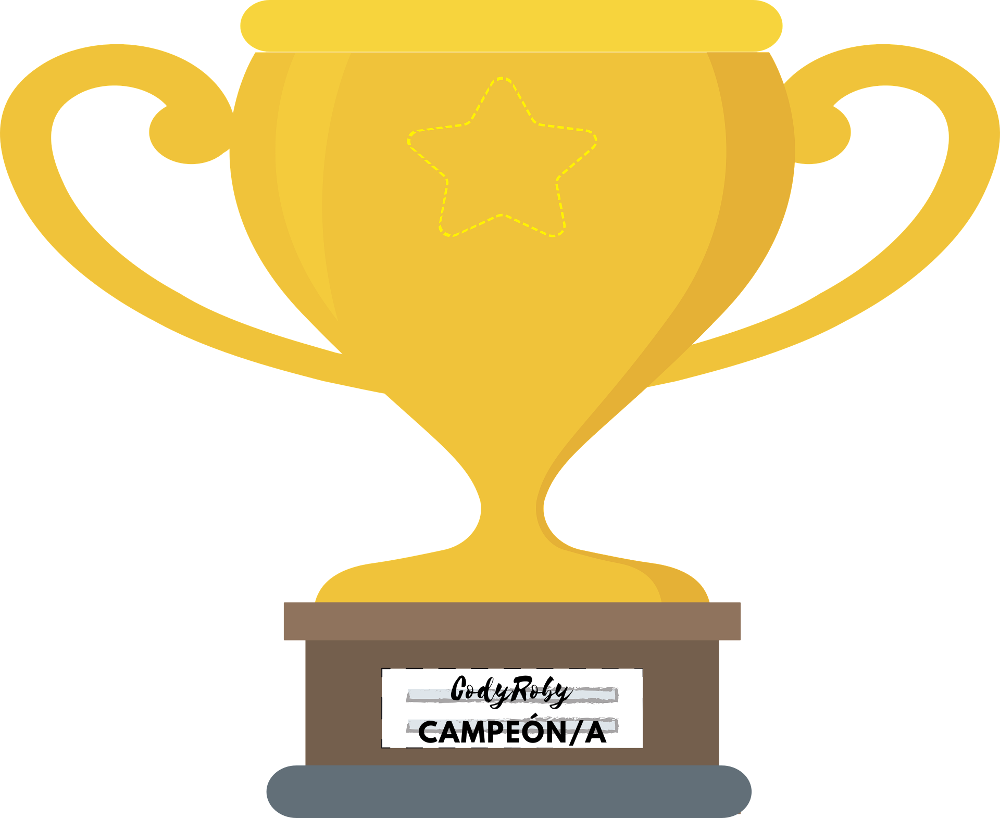

Cody y Roby es el nombre de un conjunto de juegos DIY (“Hazlo tú mismo”) que proporcionan una manera fácil de empezar a jugar con robots y programación a cualquier edad, sin necesidad de usar ordenadores, tabletas o móviles.
VIDEOTUTORIALES:
Si quieres jugar en casa con familiares o amig@s, el Kit de inicio para principiantes se puede descargar, imprimir y recortar para obtener la baraja de cartas, el tablero y las fichas.
http://www.codeweek.it/cody-roby-en/ecw-edition/
El profe organizará un torneo entre el alumnado. Recuerda que el objetivo es aprender y pasarlo bien, así que no te enfades por perder. Se felicita al contrincante siempre.
Gana el alumno/a que consiga eliminar a todos sus oponentes.
Vamos!!! 